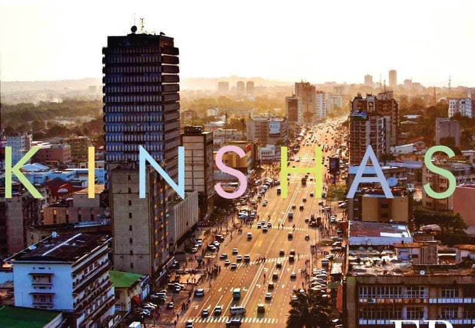

Patrick Kalambayi Ntambwe | WDD 130
Hi, I am Patrick Kalambayi from DR Congo and I live in the capital city Kinshasa.
Kinshasa

Kinshasa , formerly Léopoldville, Capital and largest city (pop., 2005 est.: 5,717,000),